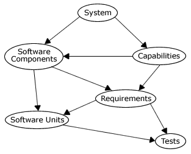

Home >> Software Life Cycle
Contents
- Software Life Cycle
- Software Life Cycle Processes
- Example: Engineer Documents & Software Life Cycle Phase
Software Life Cycle
| Phase | Possible Outcomes |
|---|---|
| Specification |
- Capabilities
- System Expectations - Business Analysis - Information Model |
| Planning |
- Feasibility
- Work Plan (resource/time estimates) - Talent Requirements - Organization Chart |
| Analysis |
- Requirements
- Testing Plans - Data Dictionary - System Archetecture - Data Model - Process Model - State--Transition Model |
| Design |
- User Documentation Outline
- Confirm Hardware - Interface - Tests - Programs - Data - Operation Planning |
| Development |
- Code
- User Documentation |
| Testing |
- Test Code
- Test Documentation - Operational Simulation |
| Implementation |
- Distribute Code
- Distribute Documentation - Train Operational Staff - Design Problem/Change - Exposure/Risk Analysis |
| Maintenance |
- Upgrades
- Audits - Problem Resolution - Problem/Change |
| Retirement |
- Destruction or Preservation of Code et al.
- Official History of System - Backups |
Back to top
Software Life Cycle Processes
Waterfall
Characteristics
- Work proceeds from top to bottom
- Management attempts to minimize the number of active phases
- Each phase ends with milestone deliverables
Advantages
- Engineering changes are minimized
- Forces conceptualization
Disadvantages
- Delays imposed to solidify milestones and from single thread
- External changes are hard to manage
Back to top
Phased Development
Characteristics
- Requirements are grouped and satisfied at different times
- Requirements may evolve
- More operational data
Advantages
- Functions into user's hands earlier
Disadvantages
- Release management
- User rejection of incomplete system
Back to top
Prototype
Characteristics
- Instead of milestones, there is fluidity
- Analysis, Design, Development and Testing happen simultaneously
- Multiple iterations
Advantages
- Shifts costs and effort lower in the cycle where they may be more acceptable
- Users are more articulate and educated for analysis
- Users have a system earlier but also more changes
Disadvantages
- More errors and deviations from intent
- Time and cost are difficult to control
Back to top
Throwaway Prototype
Characteristics
- Like Waterfall methodology, only problems in analysis or design cause a prototype subproject initiation. The prototypes should inform the process for completing the design or analysis phase.
- Usually the prototyping was unplanned or at least undefined
Advantages
- Like Waterfall
Disadvantages
- Like Waterfall and Prototyping
Back to top
Example: Engineer Documents & Software Life Cycle Phase
| Phase | Document | Defines | Traces Back To |
|---|---|---|---|
| Specification | Specification | Capabilities | |
| Planning | Planning Architecture | (software components) | (capabilities) |
| Analysis | Requirements | Requirements | Capabilities |
| Analysis | Test Plan | Tests | Requirements |
| Design | Design | Software Units | Requirements |
| Design | Test Design | Tests | Software Units |
Traceability

Back to top